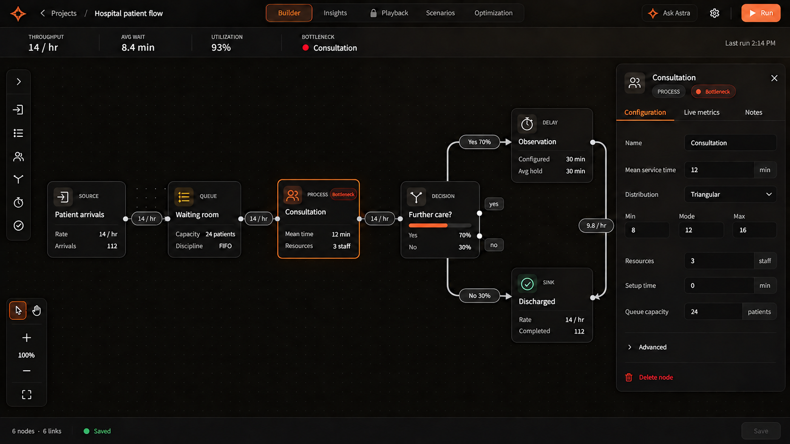
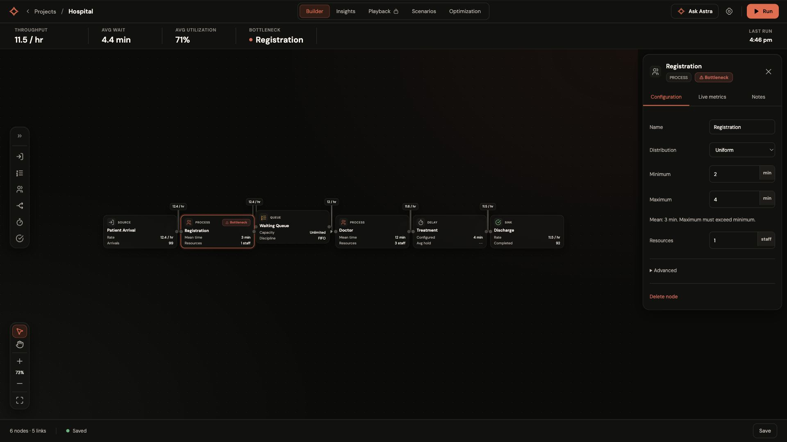

Reference · 1672 × 941

Implementation · 1920 × 1080

The saved Hospital graph has six nodes in a linear flow, different names and real metrics. Its positions remain unchanged. The screenshot's branch layout applies to newly generated models.

